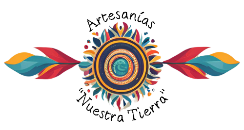
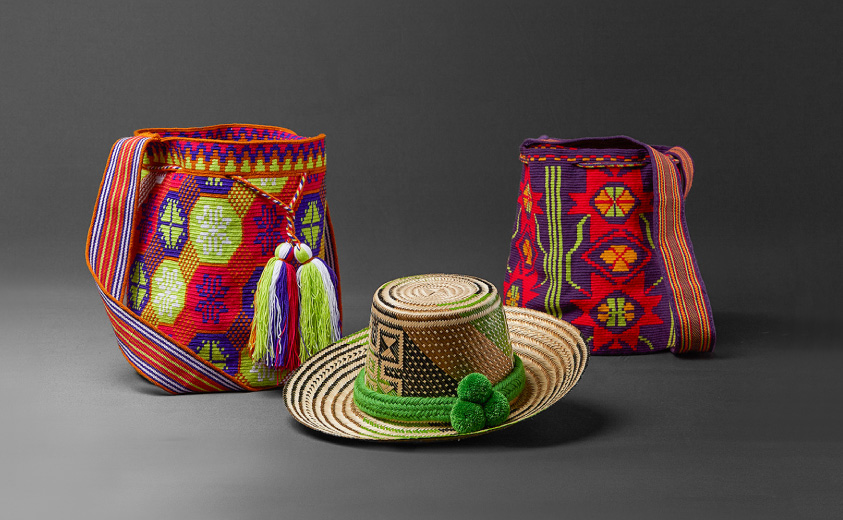
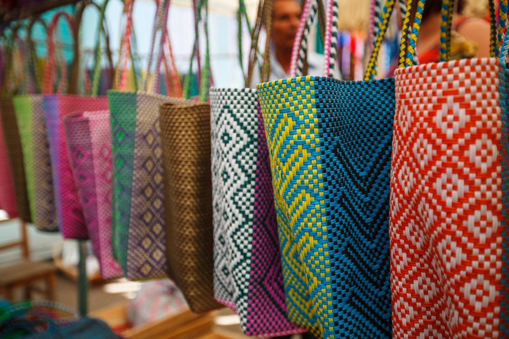

<div class="homepage">
  <main>
    <section class="hero">
      <h1>Bienvenido a Artesanías de Nuestra Tierra</h1>
      <p>En Artesanías de Nuestra Tierra, te invitamos a descubrir la rica
        herencia cultural de Boyacá y Cundinamarca a través de nuestras
        artesanías únicas. Cada pieza refleja el talento y la tradición de los
        artesanos locales, quienes preservan técnicas ancestrales para crear
        obras de arte impresionantes. Desde coloridos tejidos y elaboradas
        cerámicas hasta intrincadas tallas en madera y vibrantes tejidos en
        lana, nuestras artesanías son una celebración de la identidad y la
        creatividad regional. Cada artículo no solo es un testimonio de la
        habilidad artesanal, sino también una ventana a la historia y las
        tradiciones de estas fascinantes regiones de Colombia.
      </p>
      <br>
      <a routerLink="/products" class="cta-button">Explorar Catálogo</a>
    </section>

    <section class="featured">
      <h2>Artesanías Destacadas</h2>
      <div class="featured-items">
        <div class="item">
          
          <h3>Vasijas Colores Ancestrales</h3>
          <p>Estas vibrantes vasijas son una representación hermosa de la cultura indígena de Colombia. Cada
            pieza está meticulosamente elaborada con técnicas tradicionales, utilizando colores vivos y patrones
            geométricos distintivos que reflejan la rica herencia cundiboyacense. Ideales para embellecer cualquier
            espacio, estas vasijas no solo son funcionales, sino también auténticas obras de arte que cuentan una
            historia.
          </p>
        </div>
        <div class="item">
          
          <h3>Mochilas Tejidas con Tradición</h3>
          <p>Nuestras mochilas combinan funcionalidad y tradición en un diseño único. Hechas a mano por artesanos
            cundiboyacenses, cada mochila presenta intrincados bordados y patrones coloridos que no solo resaltan la habilidad
            artesanal, sino que también ofrecen una durabilidad excepcional. Perfectas para el uso diario o para añadir
            un toque de color a tu outfit, estas mochilas son un testimonio del talento y la creatividad de los
            artesanos locales.

          </p>
        </div>
        <div class="item">
          
          <h3>Bolsas Versátiles de Artesanía</h3>
          <p>Las bolsas multiusos están diseñadas para ser tanto prácticas como versátiles. Confeccionadas con
            materiales resistentes y un diseño funcional, estas bolsas son ideales para cualquier ocasión, desde hacer
            compras hasta llevar tus pertenencias personales. Los detalles artesanales y los acabados cuidadosamente
            elaborados aseguran que cada bolsa no solo sea útil, sino también una pieza distintiva que celebra la
            habilidad y la innovación de nuestros artesanos.
          </p>
        </div>
      </div>
    </section>
  </main>


</div>